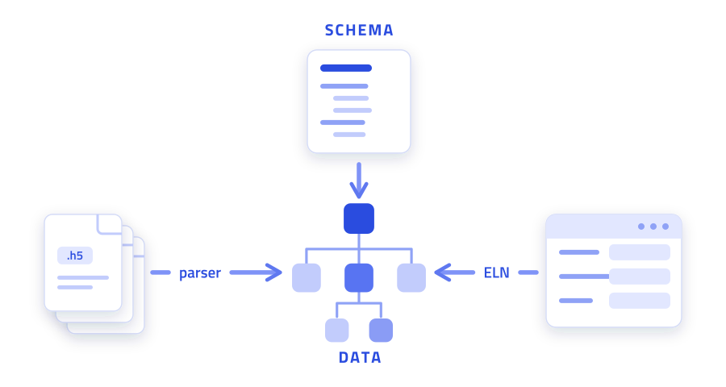
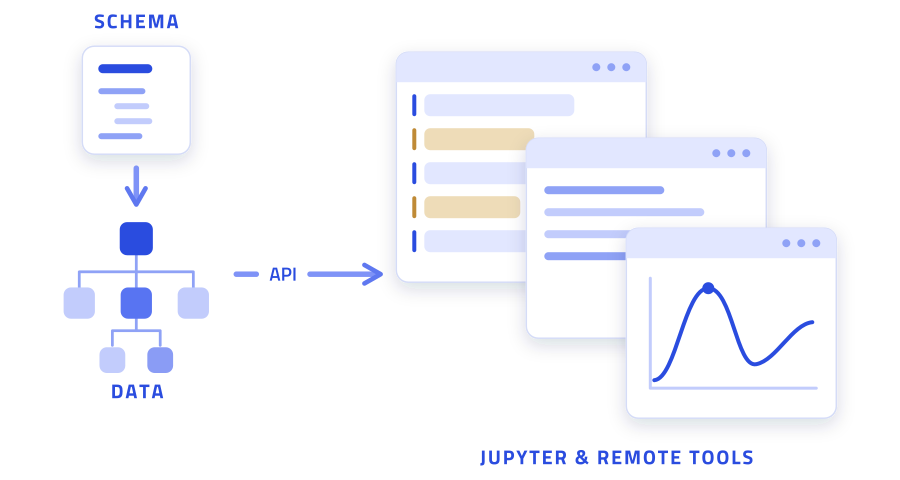
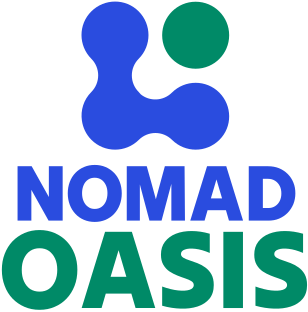

42 active
Plugins installed
DFT Parser Bundle core
Molecular Dynamics Schema core
XPS Schema (FAIRmat) community
EELS Analysis Plugin community
+ 38 more ...

Upload files individually or zip entire directory structures. NOMAD organizes them the way you would on your hard drive.
Publish and archive your data for free. Assign DOIs to datasets and reference them directly in your papers.
Not ready to publish? Work in private first, collaborate with your group, or switch to Oasis for higher privacy.
Machine-actionable data extracted from 60+ codes and formats. Findable, accessible, interoperable, and reusable.
The largest open materials database of its kind, combining data from Materials Project, AFLOW, OQMD, and more.
Run Jupyter notebooks and analysis tools directly on NOMAD. Access and publish notebooks alongside your data.

All data in NOMAD follows a schema that defines how data is hierarchically structured and cross-referenced. This schema is called the NOMAD Metainfo. It covers general domain-independent structures and detailed, method-specific content.

Because all data is uniformly organized, you can use existing tools or build your own to analyze data from any source. The NOMAD Remote Tools Hub (NORTH) runs containerized tools and Jupyter notebooks directly on your data.
Sign up in under a minute. No account needed to browse, but required to upload or publish.
Getting started guide →Explore 19M+ existing entries, or drag and drop your own simulation output. NOMAD parses it automatically.
Supported simulation codes →Make your dataset public when you are ready. Request a DOI in one click, then link it in your paper.
Publishing guide →Used as a testing ground for the release candidates that we put out roughly every 3 months.
Synced with production and staging, but all data stored here is only temporary.
Use your own resources, your own rules, and your own extensions. Manage all your group's data on self-hosted infrastructure with the same codebase as NOMAD Central.

Learn about Oasis →